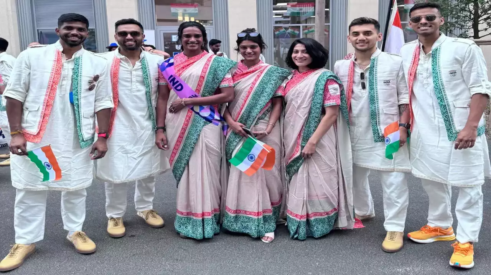

Fashion designer Tarun Tahiliani has defended the uniforms he created for the Indian contingent at the 2024 Paris Olympics, despite facing significant backlash. Tahiliani emphasized the importance of focusing on the athletes performances rather than the
controversy surrounding the attire. He also noted that some industrialists had shown
interest in his designs reflecting a more positive reception from certain quarters.
Tahiliani renowned for his work in Indian fashion has always been celebrated for his
ability to blend traditional elegance with contemporary flair.Regarding the Olympic
uniforms Tahiliani expressed his commitment to the design despite the criticism. He
clarified that the decision to dress female athletes in sarees was not made by him at
the last minute, but he aimed to create a cohesive look that reflected the Indian flags colours. I stand by these uniforms Tahiliani affirmed. While opinions differ I believe
in the symbolism and intention behind the design.
It's time to focus on the medals I think the fashion designer was quoted as saying.
The Olympic outfits drew criticism on social media with some labeling them as eyesores and "works of absolute mediocrity.The male athletes were dressed in white kurta pyjamas paired with jackets featuring the saffron and green of the Indian tricolor while the female athletes wore sarees.Former Indian badminton star Jwala Gutta voiced her disappointment on X (formerly Twitter) criticizing the decision to use sarees particularly given that not all female athletes are familiar with draping them. Gutta also expressed concerns about the fit and overall aesthetic of the garments.The garments made for the Indian contingent have been a
huge disappointment Gutta wrote.